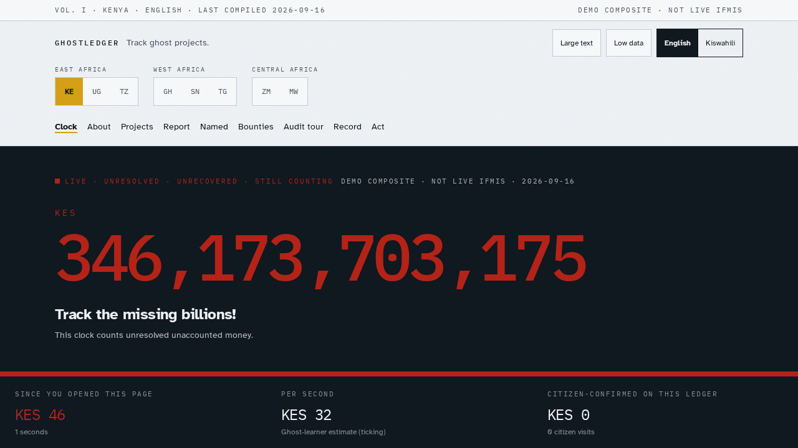
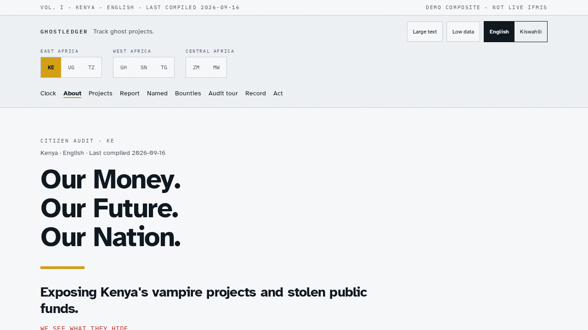
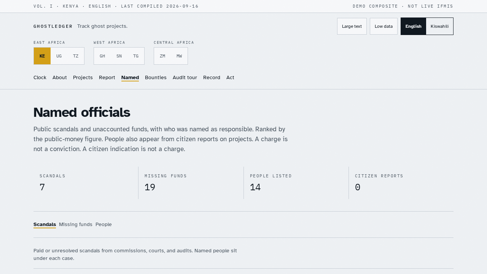
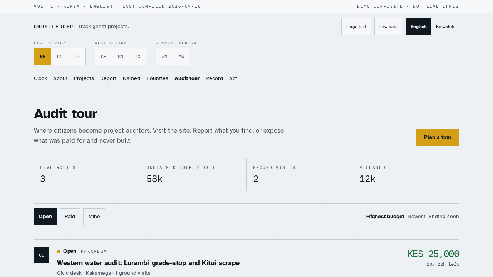

Public preview · GhostLedger
A citizen audit of ghost public works. Paper, ground, next step.
Clock of missing billions, recovered funds, project map, named officials, and citizen audit tours. No install.




GitHub Codespaces starts a cloud computer with Node 22. After it boots, in the terminal:
npm install to finish (it runs on first open).npm run dev.A free GitHub account can open Codespaces. Deploying a copy on Vercel gives you a permanent public URL to share.